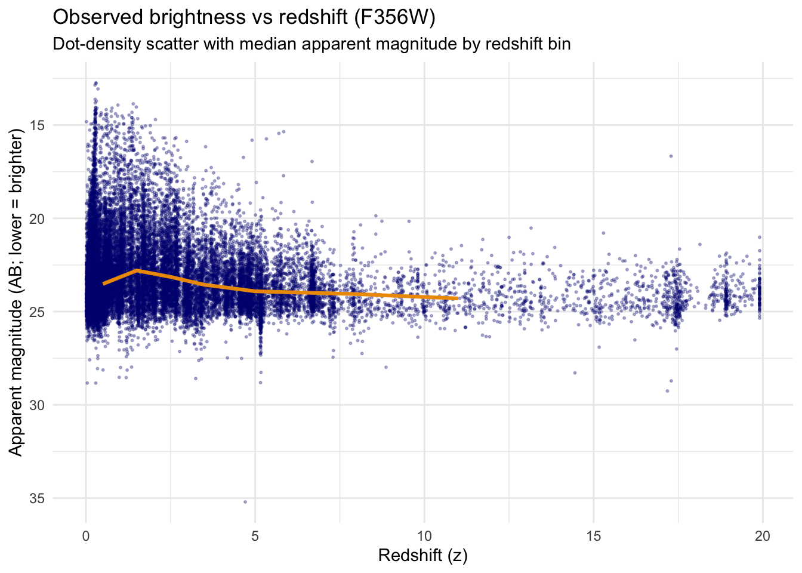
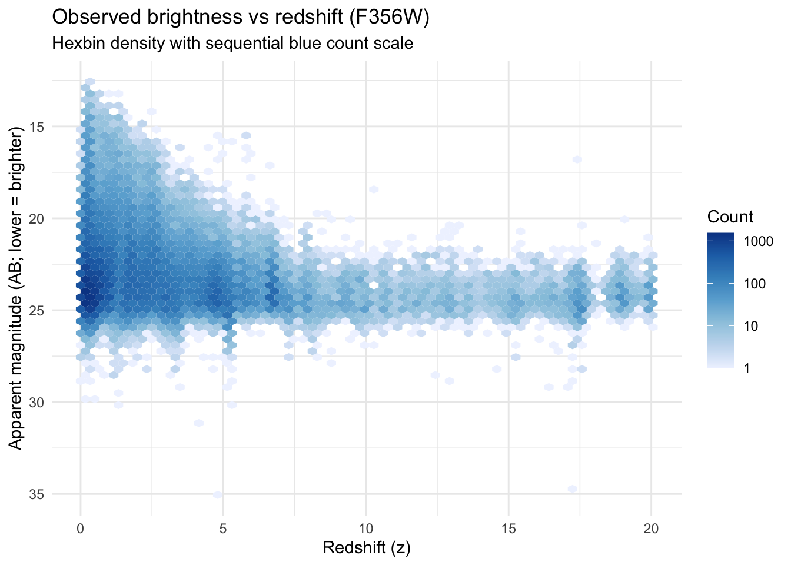
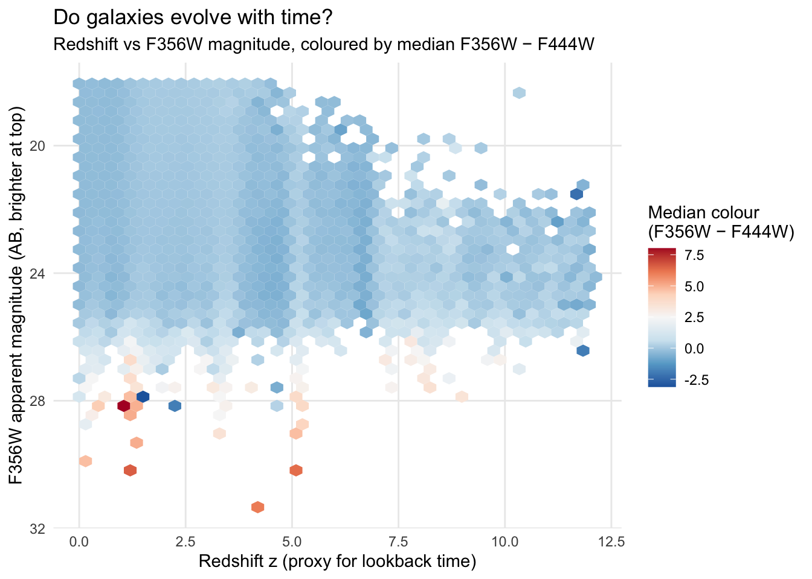
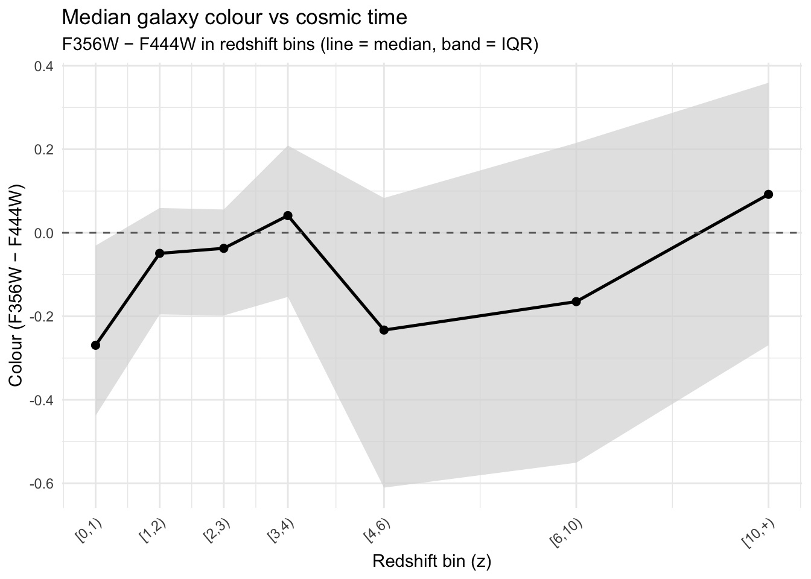
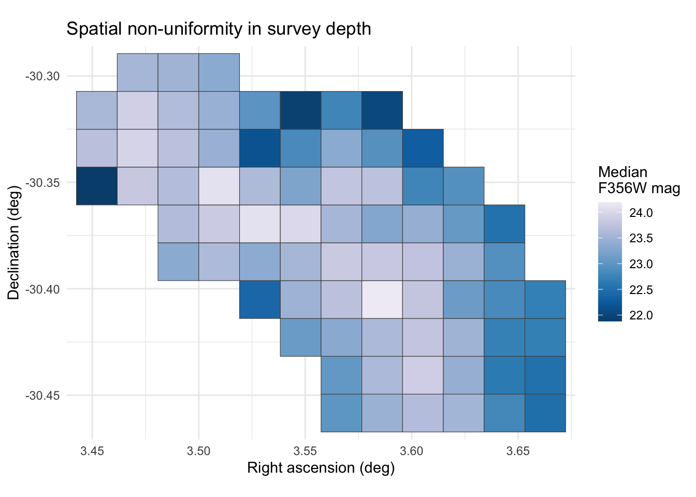
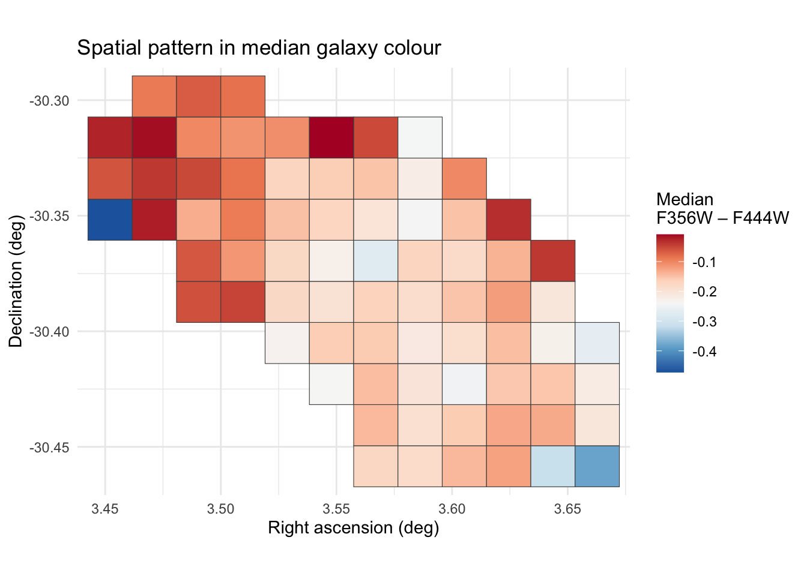
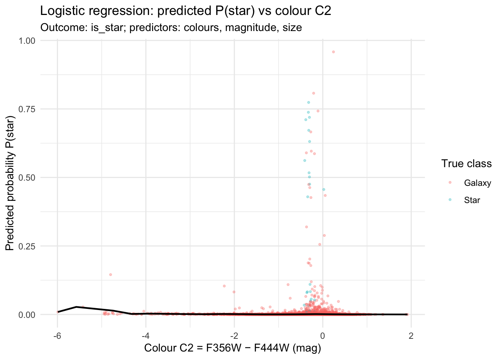

Code
library(tidyverse)
library(viridis)
library(hexbin)
library(naniar)
library(ggridges)
library(scales)
library(naniar)
library(dplyr)
library(tidyr)
library(ggplot2)
library(stringr)
library(hexbin)
library(broom)
library(tibble)library(tidyverse)
library(viridis)
library(hexbin)
library(naniar)
library(ggridges)
library(scales)
library(naniar)
library(dplyr)
library(tidyr)
library(ggplot2)
library(stringr)
library(hexbin)
library(broom)
library(tibble)clean_obj <- readRDS("data/clean/gal_clean.rds")
gal_clean <- clean_obj$gal_clean
gal_long_mag <- clean_obj$gal_long_mag
safe_mag_cols <- clean_obj$safe_mag_cols(Using F356W as anchor band)
I. Does brightness change with time?
I will use two different plots for my analysis.
Code 1: Dot Density Plot
#Using 1 safe band for brightness
band_brightness <- "F356W"
mag_col <- paste0("m_", tolower(band_brightness))
gal_bright <- gal_clean %>%
filter(is.finite(.data[[mag_col]])) %>%
mutate(mag = .data[[mag_col]])
#Dot density scatter sample
n_sample <- min(25000L, nrow(gal_bright))
gal_bright_sample <- gal_bright %>%
slice_sample(n = n_sample)
#Median magnitude per redshift bin + midpoints
med_brightness <- gal_bright %>%
group_by(z_bin) %>%
summarise(
med_mag = median(mag, na.rm = TRUE),
.groups = "drop"
) %>%
mutate(
z_mid = dplyr::recode(as.character(z_bin),
"[0,1)" = 0.5, "[1,2)" = 1.5, "[2,3)" = 2.5,
"[3,4)" = 3.5, "[4,6)" = 5, "[6,10)" = 8,
"[10,+)" = 11
)
) %>%
filter(!is.na(z_mid))
#Plot
ggplot(gal_bright_sample, aes(x = z, y = mag)) +
geom_point(color = "navy", alpha = 0.3, size = 0.4) +
geom_line(data = med_brightness,
aes(x = z_mid, y = med_mag),
colour = "orange2", linewidth = 1.1) +
scale_y_reverse() +
labs(
title = "Observed brightness vs redshift (F356W)",
subtitle = "Dot-density scatter with median apparent magnitude by redshift bin",
x = "Redshift (z)",
y = "Apparent magnitude (AB; lower = brighter)"
) +
theme_minimal()
Code 2: Hexbin Density Plot
ggplot(gal_bright, aes(x = z, y = mag)) +
stat_binhex(bins = 60, alpha = 3.5) +
scale_y_reverse() +
scale_fill_distiller(
palette = "Blues",
direction = 1,
trans = "log10", #log stretch so both sparse & dense regions show up
name = "Count"
) +
labs(
title = "Observed brightness vs redshift (F356W)",
subtitle = "Hexbin density with sequential blue count scale",
x = "Redshift (z)",
y = "Apparent magnitude (AB; lower = brighter)"
) +
theme_minimal()
Observations:
The dot density plot shows the density spread from bright points in the galaxies to low, faint spots in the galaxies. The median line is consistent around 23-24 AB magnitude until z=10.
To get a better clarity, the hexbin density plot further defines the visualization. At lower z, there is a greater density of different mix of stars, brighter galaxies, fainter galaxies, etc. Around z=10 or higher redshifts, I can clearly observe that only the brightest galaxies are observable.
At very high redshifts like z>15, the survey starts reaching it’s limits. Only a few sources detected.
# Bin brightness in F356W (you can tweak breaks)
gal_ev <- gal_clean %>%
filter(
is.finite(z),
is.finite(m_f356w),
is.finite(C2_F356_F444)
)
if ("class" %in% names(gal_ev)) {
gal_ev <- gal_ev %>%
filter(str_detect(tolower(class), "gal")) # matches "galaxy", "gal", etc.
}
gal_ev <- gal_ev %>%
filter(
z >= 0, z <= 12,
m_f356w > 18, m_f356w < 32 # drop crazy outliers
)
gal_ev %>%
select(z, z_bin, m_f356w, m_f444w, C2_F356_F444) %>%
slice_head(n = 10)# A tibble: 10 × 5
z z_bin m_f356w m_f444w C2_F356_F444
<dbl> <fct> <dbl> <dbl> <dbl>
1 0.982 [0,1) 24.1 24.0 0.0411
2 1.86 [1,2) 24.8 24.9 -0.0913
3 5.15 [4,6) 25.4 25.2 0.164
4 0.173 [0,1) 23.5 23.7 -0.169
5 5.66 [4,6) 24.2 24.7 -0.473
6 6.59 [6,10) 23.5 24.0 -0.497
7 2.30 [2,3) 22.6 22.5 0.144
8 0.427 [0,1) 22.9 23.1 -0.117
9 6.72 [6,10) 22.8 24.4 -1.64
10 6.69 [6,10) 24.0 24.9 -0.892 ggplot(gal_ev, aes(x = z, y = m_f356w)) +
stat_summary_hex(
aes(z = C2_F356_F444),
bins = 40, alpha=3.5,
fun = median
) +
scale_y_reverse() +
scale_fill_distiller(
type = "div",
palette = "RdBu",
direction = -1, # blue = negative (bluer), red = positive (redder)
na.value = "grey90",
name = "Median colour\n(F356W − F444W)"
) +
labs(
title = "Do galaxies evolve with time?",
subtitle = "Redshift vs F356W magnitude, coloured by median F356W − F444W",
x = "Redshift z (proxy for lookback time)",
y = "F356W apparent magnitude (AB, brighter at top)"
) +
theme_minimal(base_size = 11) +
theme(
panel.grid.minor = element_blank(),
legend.position = "right"
)
col_z_trend <- gal_ev %>%
filter(!is.na(z_bin)) %>%
group_by(z_bin) %>%
summarise(
n = n(),
med_col = median(C2_F356_F444, na.rm = TRUE),
q25 = quantile(C2_F356_F444, 0.25, na.rm = TRUE),
q75 = quantile(C2_F356_F444, 0.75, na.rm = TRUE),
.groups = "drop"
) %>%
mutate(
z_mid = recode(as.character(z_bin),
"[0,1)" = 0.5, "[1,2)" = 1.5, "[2,3)" = 2.5,
"[3,4)" = 3.5, "[4,6)" = 5, "[6,10)" = 8,
"[10,+)" = 11
)
) %>%
filter(n >= 30) # drop super-sparse bins
ggplot(col_z_trend, aes(x = z_mid, y = med_col)) +
geom_ribbon(
aes(ymin = q25, ymax = q75),
fill = "grey85", alpha = 0.7
) +
geom_line(linewidth = 0.9) +
geom_point(size = 2) +
geom_hline(yintercept = 0, linetype = "dashed", colour = "grey40") +
scale_x_continuous(
breaks = c(0.5, 1.5, 2.5, 3.5, 5, 8, 11),
labels = c("[0,1)", "[1,2)", "[2,3)", "[3,4)", "[4,6)", "[6,10)", "[10,+)")
) +
labs(
title = "Median galaxy colour vs cosmic time",
subtitle = "F356W − F444W in redshift bins (line = median, band = IQR)",
x = "Redshift bin (z)",
y = "Colour (F356W − F444W)"
) +
theme_minimal(base_size = 11) +
theme(
axis.text.x = element_text(angle = 40, hjust = 1)
)
Observations:
It can be observed that the galaxy colors in the observed sample vary across redshift, but not in a clean way. In the median color vs. redshift plot, the median (F356W–F444W) fluctuates around 0 and only becomes slightly positive in some bins, so I cannot claim a steady “redder with time” trend. The hexbin plot suggests a clearer pattern with brightness: the reddest colours concentrate mostly among the faintest galaxies (higher F356W magnitude), across multiple redshifts. Since high-redshift galaxies are typically faint in brightness, and closer to the survey limit, this can create an apparent “redshift–colour” effect. Therefore, based on my results, the evidence for true galaxy evolution from these plots alone is inconclusive.
To know more about the survey, I will move on to a spatial non uniformity analysis.
ra_min <- min(gal_clean$ra, na.rm = TRUE)
ra_max <- max(gal_clean$ra, na.rm = TRUE)
dec_min <- min(gal_clean$dec, na.rm = TRUE)
dec_max <- max(gal_clean$dec, na.rm = TRUE)
n_ra <- 12 #number of tiles in RA direction
n_dec <- 10 #number of tiles in Dec direction
ra_step <- (ra_max - ra_min) / n_ra
dec_step <- (dec_max - dec_min) / n_dec
gal_tiles <- gal_clean %>%
mutate(
ra_tile = floor((ra - ra_min) / ra_step),
dec_tile = floor((dec - dec_min) / dec_step),
ra_tile = pmin(pmax(ra_tile, 0L), n_ra - 1L),
dec_tile = pmin(pmax(dec_tile, 0L), n_dec - 1L),
ra_ctr = ra_min + (ra_tile + 0.5) * ra_step,
dec_ctr = dec_min + (dec_tile + 0.5) * dec_step
)
tile_stats <- gal_tiles %>%
group_by(ra_tile, dec_tile, ra_ctr, dec_ctr) %>%
summarise(
n_obj = n(),
med_mag = median(m_f356w, na.rm = TRUE),
med_color = median(C2_F356_F444, na.rm = TRUE),
frac_safe = mean(rowSums(across(all_of(safe_mag_cols), ~ is.finite(.))) > 0),
.groups = "drop"
)
tile_stats# A tibble: 75 × 8
ra_tile dec_tile ra_ctr dec_ctr n_obj med_mag med_color frac_safe
<dbl> <dbl> <dbl> <dbl> <int> <dbl> <dbl> <dbl>
1 0 6 3.45 -30.4 2 21.9 -0.472 1
2 0 7 3.45 -30.3 966 23.7 -0.0615 1
3 0 8 3.45 -30.3 649 23.6 -0.0255 1
4 1 6 3.47 -30.4 497 23.8 -0.0208 1
5 1 7 3.47 -30.3 1588 24.0 -0.0394 1
6 1 8 3.47 -30.3 1596 23.9 -0.0125 1
7 1 9 3.47 -30.3 452 23.6 -0.0903 1
8 2 4 3.49 -30.4 39 23.3 -0.0580 1
9 2 5 3.49 -30.4 742 23.6 -0.0644 1
10 2 6 3.49 -30.4 898 23.7 -0.134 1
# ℹ 65 more rowsa)Median F356W magnitude (depth proxy)
p_depth <- ggplot(tile_stats,
aes(x = ra_ctr, y = dec_ctr, fill = med_mag)) +
geom_tile(colour = "grey30", linewidth = 0.2) +
scale_fill_distiller(
palette = "PuBu",
direction = -1,
na.value = "grey90",
name = "Median\nF356W mag"
) +
scale_y_continuous(expand = expansion(mult = 0.02)) +
scale_x_continuous(expand = expansion(mult = 0.02)) +
coord_equal() +
labs(
title = "Spatial non-uniformity in survey depth",
x = "Right ascension (deg)",
y = "Declination (deg)"
) +
theme_minimal()
p_depth
b)Median Color
p_color <- ggplot(tile_stats,
aes(x = ra_ctr, y = dec_ctr, fill = med_color)) +
geom_tile(colour = "grey30", linewidth = 0.2) +
scale_fill_distiller(
palette = "RdBu",
direction = -1,
name = "Median\nF356W – F444W"
) +
scale_y_continuous(expand = expansion(mult = 0.02)) +
scale_x_continuous(expand = expansion(mult = 0.02)) +
coord_equal() +
labs(
title = "Spatial pattern in median galaxy colour",
x = "Right ascension (deg)",
y = "Declination (deg)"
) +
theme_minimal()
p_color
It can be easily observed that the survey is not uniform in the sky. Some patches were observed deeper, while some patches were observed shallower. In the depth proxy plot, I am trying to measure the brightness in a tile, and whether we’re detecting fainter spots in the deeper tiles and brighter spots in the shallower tiles. For the median color plot, I used a diverging color scheme to show how much the colors of the galaxy vary spatially, where neutrals at 0 are at white tiles.
Based on the above plots, when I try to analyze if deeper tiles have differen median colors, it can be somewhat observed that the effects of survey bias plays a string role. Because survey depth varies across the field, and tiles with different depth show different median colours, some of the observed colour pattern could reflect survey effects rather than pure cosmic evolution.
Prepare modelling data:
# 1. Prepare modelling data
sg_data <- gal_clean %>%
mutate(
# SNR in F356W from flux / error (only where both are finite)
snr_f356w = ifelse(
is.finite(f_f356w) & is.finite(e_f356w) & e_f356w > 0,
f_f356w / e_f356w,
NA_real_
)
) %>%
filter(
flag_star %in% c(0, 1), # only objects with star flag defined
is.finite(C1_F277_F356),
is.finite(C2_F356_F444),
is.finite(m_f356w),
is.finite(kron_radius_circ),
is.finite(snr_f356w),
snr_f356w >= 5 # S/N cut to avoid very noisy cases
) %>%
mutate(
is_star = flag_star == 1L, # logical
y_true = as.integer(is_star), # 1 = star, 0 = galaxy/non-star
true_class = if_else(is_star, "Star", "Galaxy"),
true_class = factor(true_class, levels = c("Galaxy", "Star"))
)
# Logistic regression: colours + magnitude + size
fit_logit <- glm(
y_true ~ C1_F277_F356 + C2_F356_F444 + m_f356w + kron_radius_circ,
data = sg_data,
family = binomial()
)
# Coefficient table with odds ratios
logit_coef <- tidy(fit_logit) %>%
mutate(odds_ratio = exp(estimate))
logit_coef# A tibble: 5 × 6
term estimate std.error statistic p.value odds_ratio
<chr> <dbl> <dbl> <dbl> <dbl> <dbl>
1 (Intercept) 31.5 2.68 11.8 5.07e-32 4.98e+13
2 C1_F277_F356 -0.0551 0.562 -0.0982 9.22e- 1 9.46e- 1
3 C2_F356_F444 -0.753 0.368 -2.05 4.08e- 2 4.71e- 1
4 m_f356w -1.53 0.117 -13.2 1.70e-39 2.16e- 1
5 kron_radius_circ -14.3 1.61 -8.91 4.94e-19 5.91e- 7Model: logit{𝑃(star)}=𝛽0+𝛽1𝐶1+𝛽2𝐶2+𝛽3𝑚356+𝛽4kron_radius with y_true = 1 for stars (flag_star == 1) and y_true = 0 for galaxies/non-stars. Predictors: C1_F277_F356, C2_F356_F444, m_f356w, kron_radius_circ, S/N cut: snr_f356w ≥ 5
Observations:
The model tells us which measurements separate stars from galaxies.
As the value of magnitude increases, objects get fainter (astronomical brightness is high for lower magnitude values). Therefore the chances of an object being a star drop.
Redder color may hint at lesser chances of the object being a star. (C2)
Size is measured by kron_radius_circ. If the objects get spread out, they’re more likely galaxies. Stars are pointy while galaxies are spread out.
Model Diagnostics:
sg_data <- sg_data %>%
mutate(
p_star = predict(fit_logit, type = "response"),
y_hat = if_else(p_star >= 0.5, 1L, 0L)
)
n_total <- nrow(sg_data)
# Misclassification rate of logistic model
err_rate <- mean(sg_data$y_hat != sg_data$y_true)
# Null classifier: always predict majority class
majority_class <- as.integer(names(which.max(table(sg_data$y_true))))
null_err <- mean(rep(majority_class, n_total) != sg_data$y_true)
# McFadden pseudo-R² (EDAV-style: using deviances)
pseudo_R2 <- 1 - (fit_logit$deviance / fit_logit$null.deviance)
logit_diag <- tibble(
metric = c(
"Error rate (logistic)",
"Error rate (null classifier)",
"McFadden pseudo-R²"
),
value = c(err_rate, null_err, pseudo_R2)
)
logit_diag# A tibble: 3 × 2
metric value
<chr> <dbl>
1 Error rate (logistic) 0.00106
2 Error rate (null classifier) 0.00114
3 McFadden pseudo-R² 0.563 Observations: The logistic error rate is slightly better than the null classifier. This means that our dataset has very few stars. Since it is a rare class problem, our metric is not sensitive enough for determining this. The McFadden pseudo R^2 shows that although stars are rare, there is a clear separation of classes between stars and galaxies. So, in likelihood terms the model is not weak.
sg_data <- sg_data %>%
mutate(
is_star = flag_star == 1L, # or your existing definition
true_class = if_else(is_star, "Star", "Galaxy"),
p_star = predict(fit_logit, type = "response") # predicted P(star)
)
# Plot: predicted P(star) vs colour C2
ggplot(sg_data,
aes(x = C2_F356_F444, y = p_star, colour = true_class)) +
geom_point(alpha = 0.3, size = 0.7) +
# binned average predicted probability across C2
stat_summary_bin(
aes(x = C2_F356_F444, y = p_star),
bins = 20,
fun = mean,
geom = "line",
colour = "black",
linewidth = 0.8,
inherit.aes = FALSE
) +
labs(
title = "Logistic regression: predicted P(star) vs colour C2",
subtitle = "Outcome: is_star; predictors: colours, magnitude, size",
x = "Colour C2 = F356W − F444W (mag)",
y = "Predicted probability P(star)",
colour = "True class"
) +
theme_minimal()
The model shows that star predictions are very close to 0. This is natural, since the data is galaxy dominated in the galaxy cluster. At C2=0, there is a vertical stack of star vs galaxies points which shows that the model does not separate based on color alone. At C2=-5, there seems to be some outliers from limited samples.